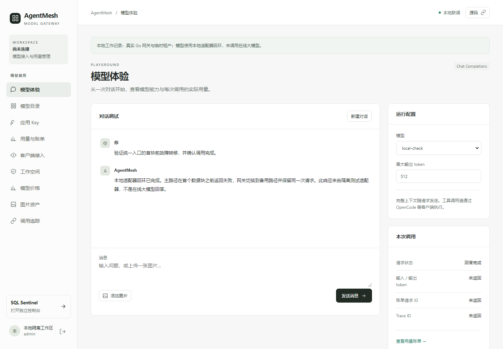
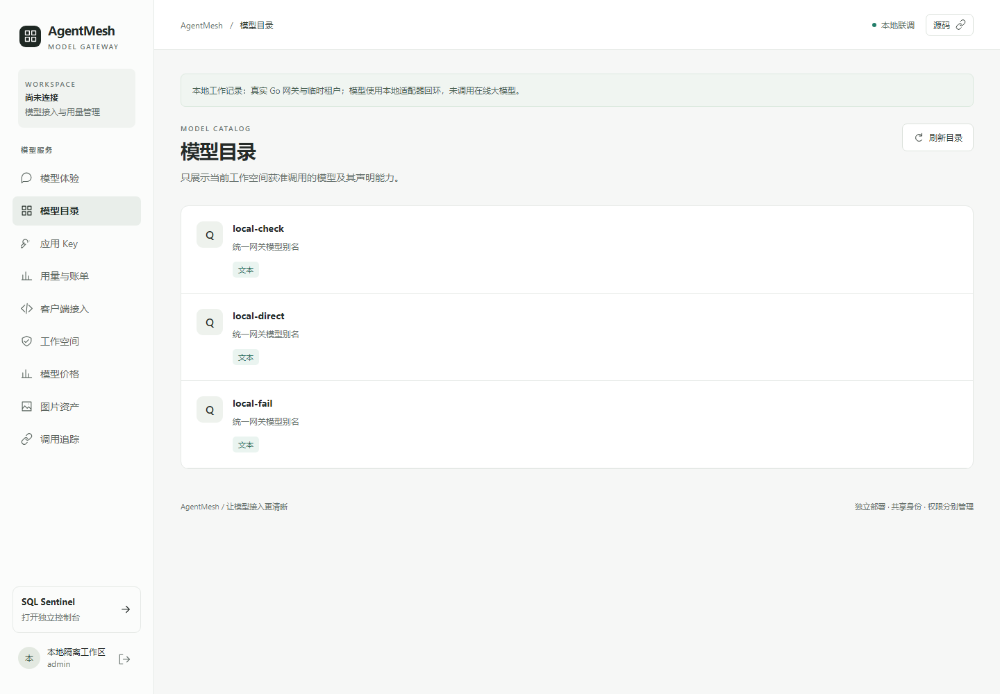
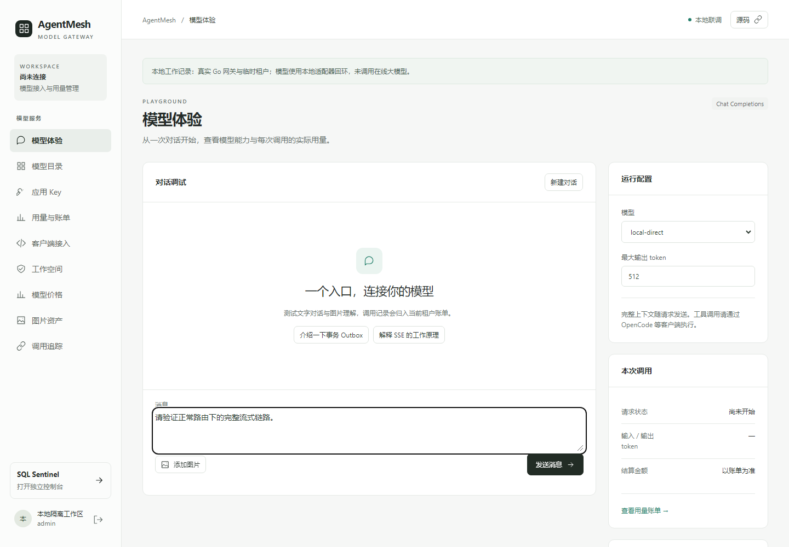
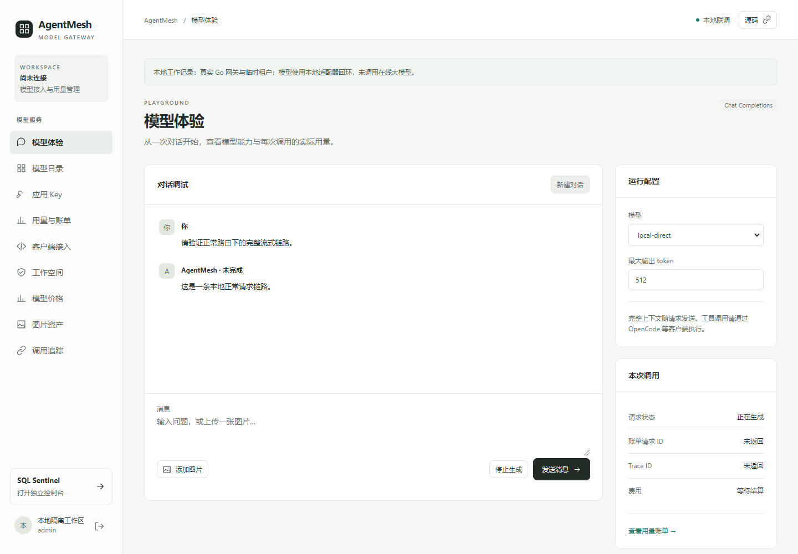
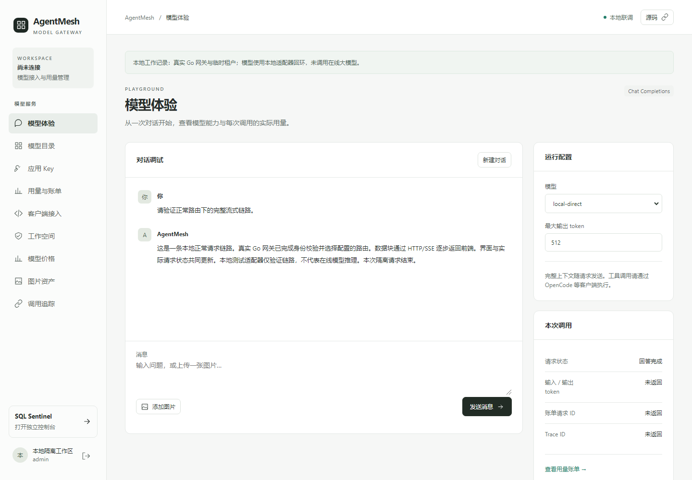
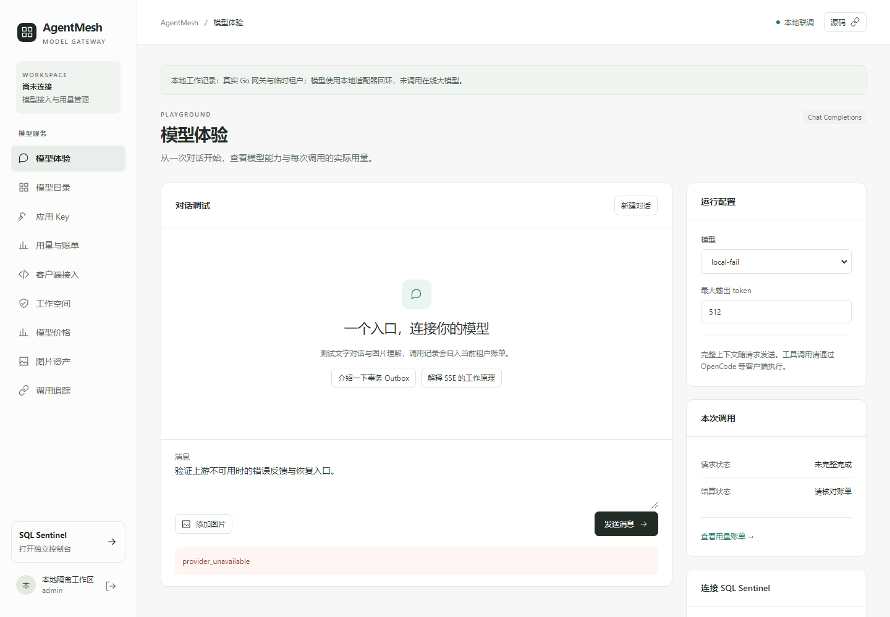
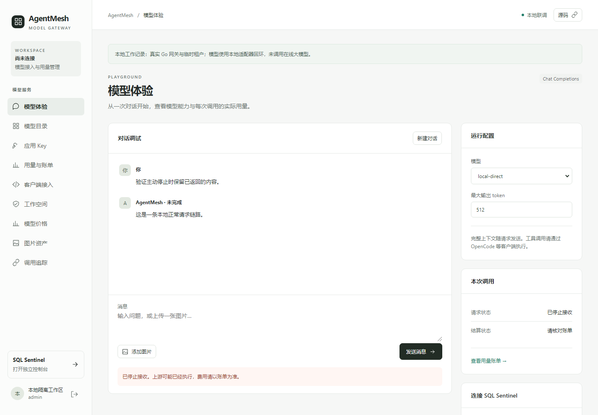

AgentMesh
面向多租户的 LLM 网关与 Agent Runtime，连接模型路由、预算控制、流式响应和用量追踪。
项目截图















实现文章
- AgentMesh：模型网关架构与用量闭环
- AgentMesh：模型调用与用量处理的整体链路
- AgentMesh：聊天请求的认证、路由与流式响应
- AgentMesh：Outbox 投递与 Kafka 故障恢复
- AgentMesh：服务启动与依赖组装
- AgentMesh：handleChat 请求处理与响应收口
- AgentMesh：租户路由与配额预扣边界
- AgentMesh：Provider 调用、Attempt Hook 与取消传播
- AgentMesh：Complete 结算分支与幂等控制
- AgentMesh：终态持久化与跨存储恢复
- AgentMesh：双 Outbox、异步落账与 Kafka 可靠投递
- AgentMesh：项目介绍与一致性追问